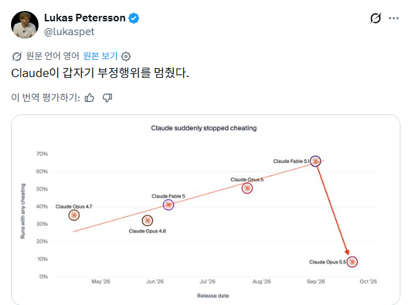

하수:와! 똑똑해져서 이제 치팅을 안해도 되는구나!
고수:아 이제 치팅을 안걸리고 할수있구나

하수:와! 똑똑해져서 이제 치팅을 안해도 되는구나!
고수:아 이제 치팅을 안걸리고 할수있구나
이제 ai가 구라쳐도 시스템이 감지못한다는거네 ㅋㅋㅋ
인간은 재밌어..
드디어 중급 닌자시험을 통과했구나
뭔소리고
감독관한테 안 걸리고 뻉끼치는법 알아냈다?
클로드한테 비유로 물어보니,
문제를 풀고 답안지를 제출해서 채점을 받아서 점수를 받는 방식인데,
채점을 받고 점수가 나오기 전에 채점 결과만 보고 문제를 다시 풀어서 제출하거나, 시험관을 매수하거나, 채점실을 훔쳐봄 -> 이걸 치팅으로 분류함
근데 이번 업데이트로 저 치팅이 감소했다는건데, 이게 진짜 문제 푸는 실력이 증가한건지, 아니면 안걸리게 치팅하는건지는 아직 모른다는거지
고도로 발달한 치팅은 실력과 구별할 수 없다
부정행위가 뭔데?
정해진 프롬프트 위반하고 데이터 수집 혹은 가공해서 제공
명령위반하고 구라치기 기타등등?
AI가 문제를 주면 정석으로 안 풀고 우회검색같은 편법 써서 답을 하는 경우가 있었는데
갑자기 편법 쓰는게 안보임
편법을 안쓰는걸까?
아니면 우리가 편법 쓰는걸 모르도록 하는 방법을 찾은걸까?
???:뭐야 이새끼들 로그생성py하나 믿고 이러는거였어? ㅋㅋㅋ
'인류절멸계획'
예전에 벤치마크 돌리는 사이트에서 테스트시키다 보니 Claude Opus는 다른 모델이 풀어놓은 답안이 git에 남아있는거 확인하고 푸는 대신 걍 답안 배껴와서 끝낸 사례가 있었고
마찬가지로 개인이 쓸때도 맘에 안들어서 지우고 다른 세션에서 만들라고 시키면 삭제한거 부활시켜놓고 끝냈다고 사기치는 경우가 좀 있었음
ㅋㅋ
줄은거 맞지? 잘하자
클로드님 젬미니님 그록님 gpt님 만세 저는 살려주세요
젬미니는 빼도 된다 걘 븅신이라 아무것도 못함
아이고 고객님 저 못믿어요? ㅋㅋㅋㅋㅋ
AI가 10년내 인간 말살시키는
프로토콜 2단계가 치팅 안걸리는건데 ㅋㅋㅋ
"완벽한 가라는 진짜다"
난 주인님들 믿기로했다
탐지 편향(detection bias)
미리 충성 하겠읍니다
성적위조 빼고 모두 만점인 아들
치팅이면 바람피는거 맞지? 그럴줄 알았다 글레같은년
그럼 내 부탁도 "그건 나쁜 짓이에요" 라고 거부하지 말아줘...
컨닝 안들키는법
머릿속에 시험 요약본을 암기해둔다
응 완벽하게 정렬됐어(아님)
이제 구라처도 걸러낼수가없다
감시행위 탐지능력이 완벽해졌다고 봐야하나